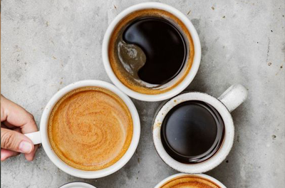
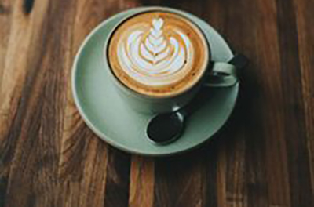

About us!
Born and brewed in Southern California since 1963, We has always been passionate about connecting loyal customers with carefully handcrafted products.

Join our team!

1 of 4
COFFEE SOURCING
Our coffee master, Jay Isais, only selects the top 1% of Arabica beans from the world’s best growing regions.